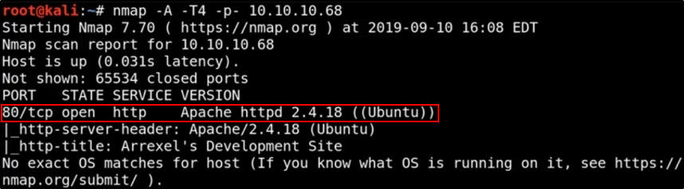
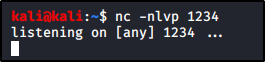

Walktrough - Bashed
Windows Machine
First, start a "nmap -T4 -A -p- IPADDRESS"


We can see only a port 80 open (Apache httpd 2.4.18) and probably an Ubuntu machine
################################################################
Web Server
We can search for exploits, just to know if there are some for that Apache version:


First thing to do: check the website


... and search more about phpbash:
https://github.com/Arrexel/phpbash


We can use Dirbuster to search trough directories:


Dirbuster show us the “dev” folder: we can try to access it


We can access phpbash.php page: it is like a bash shell!!!
You can even send some commands to the page as a shell


We are www-data here, so we are already somehow into the machine.
But we can try to get the root access.
First off, we can use “sudo -l” to see what we can do:
we can switch to another user called scriptmanager


Unfortunaly, we can't create a shell


Idea: we can upload something malicious to get an exploit,
We can try to get a php reverse shell
http://pentestmonkey.net/tools/web-shells/php-reverse-shell


Reading the instructions, we need to change some setting
and have something to listen to (like a netcat listener)



We need to upload the file on the machine (We can use many methods, like SimpleHTTPServer)
On your machine (Hosting the php reverse shell):


On enemy phpbash:


If we go to the URL, we can gain the shell!!


We are still the (www-data) user here:
We can't access the tty (the software part that output commands to the terminal)
We need to improve our situation with... TTY ESCAPE COMMANDS!!!
https://netsec.ws/?p=337


Let's try some methods:
Python worked!!! (But we changed form /bin/sh to /bin/bash)


Better see what we can do over there.
The attempt to log as a scriptmanager failed (we are trying a blank password)


We can try something smarter:
Execute a command as a scriptmanager like /bin/bash and login as him!!!


We are logged as scriptmanager now!!
But we have no sudo access, so no big deal


If we searc htrough folders, we can see an unusual “script” folder into / folder


We can see an interesting thing here:
The “test.txt” file is written at 13:33 (the date when I went into the folder) and it is root:root
by the python “test.py” file every minute
Our idea can be: overwrite the python file with a reverse shell!!!
http://pentestmonkey.net/cheat-sheet/shells/reverse-shell-cheat-sheet


REMEMBER: SUBSTITUTE “/bin/sh” with "/bin/bash"
CHANGE THE S.CONNECT VALUES WITH YOUR IP ADDRESS AND A NEW PORT (E.G 2345)


Copy the green part (changed with right values), paste into the test.py file and start a listener
(To change the test.py file you can use nano if it is available or the SimpleHTTPServer + wget method)


Wait a minute and....